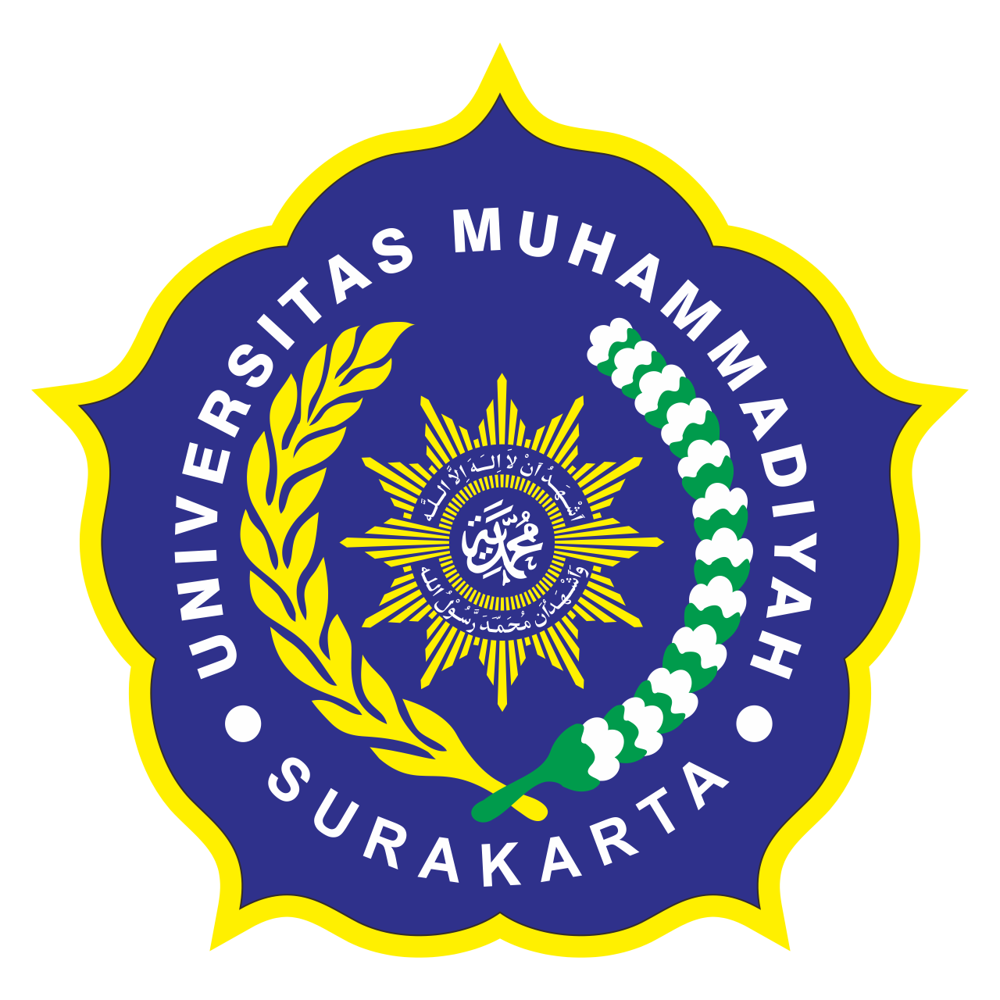

My Experience

Programming Algorithm Laboratory Assistant
Sep 2024 - Jan 2025
Universitas Muhammadiyah Surakarta

Head of Science and Research
Jan 2025 - Present
Himpunan Mahasiswa Teknik Informatika
Staff of Science and Research
Jan 2024 - Dec 2024
Himpunan Mahasiswa Teknik Informatika

Staff of the Science and Technology Research
Jan 2024 - Present
Forum Open Source Teknik Informatika